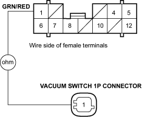

- Check for continuity between the 12P connector terminal No. 1 and vacuum switch 1P connector terminal No. 1.
UNDER-DASH FUSE/RELAY BOX 12P CONNECTOR

Terminal side of male terminals
Is there continuity?
YES - Go to step 4.
NO - Repair open in the GRN/RED wire between the vacuum switch and MPCS.
- Connect the 12P connector to the under-dash fuse/relay box.
- Release the parking brake lever fully.
- Turn the ignition switch ON (II) and watch the brake system indicator.
Does the brake system indicator come on?
YES - If the brake system indicator stays on, perform the MPSC troubleshooting (see page 22-36).
NO – If the brake system indicator comes on and goes off, it is OK. Go to step 7.
- Connect the vacuum switch 1P connector to the vacuum switch.
- Start the engine and wait at least 10 seconds.
- Stop the engine and switch the ignition switch OFF.
- Return the ignition switch ON (II) and watch the brake system indicator.
Does the brake system indicator come on?
YES – If the brake system indicator stays on, check for a loose vacuum switch connector. If necessary, replace the new vacuum switch and recheck (see page 19-5). 
NO – If the brake system indicator comes on and goes off, it is OK. Press the brake pedal seven to eight times to deplete the brake booster. If the vacuum switch is in good condition the brake system indicator should come on.